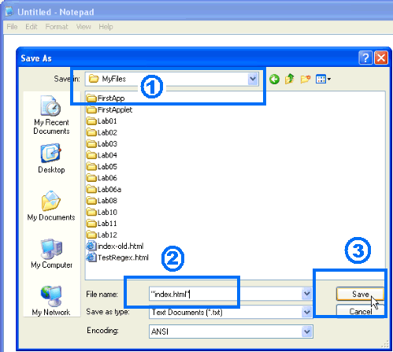
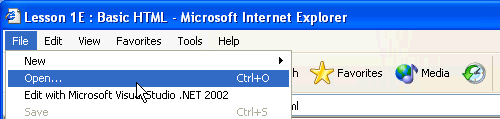
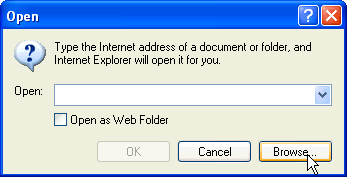
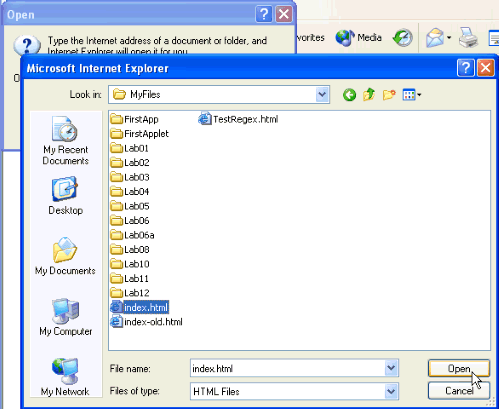
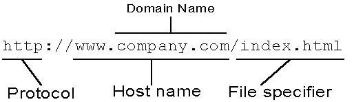
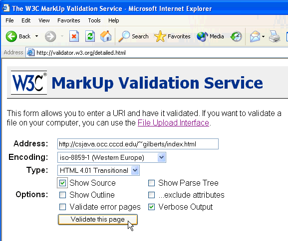

As you learned in the first lesson this week, HyperText Markup Language (HTML) documents are regular text files that are stored on a server. When a client program such as a Web browser requests a particular document it is delivered to the client by an HTTP or Web server. When it reaches the client, the plain text is interpreted and displayed, just like the page you are viewing now.
This optional lesson will teach you the basic syntax of HTML, the language used to encode Web pages so that they can be interpreted by your browser. Of course, since this is a class in Java programming, not HTML, the emphasis is on the basic. If you want to learn about HTML programming, (in-depth), OCC has several classes to help you, including:
- CIS 123 - Basic HTML Programming
- CIS 171 - JavaScript Programming
- CIS 223 - Advanced HTML Programming (CSS and DHTML)
To create Java Applets using Eclipse, you actually don't need to know any HTML at all. If you want to deploy your applet on your own Web site, though, you'll need at least some knowledge of HTML tags.
Basic HTML
Many programmers get very offended when you call HTML a programming language; after all, it has no variables, no loops, no selection statements; it has none of the programming language features that mark FORTRAN, COBOL, C, and Java. How can it be a language?
The answer is quite simple: it says so! Its name is HyperText Markup Language, and, let's face it, if Political Science and Computer Science can get away with calling themselves sciences—no matter what those stuffy folks in Physics and Biology say—then we're duty bound to honor HTML's modest claims.
As the name says, HTML is a markup language, the most prolific of a family of languages that began with SGML (Standard Generalized Markup Language) and that includes XML (eXtensible Markup Language) as well as XHTML, the "official" successor to HTML. To be perfectly accurate, though, markup languages are not general-purpose programming languages like Java; they only do one thing: specify the structure of a document in a specific way.
NOTE: XML is becoming the "next big thing", but it's pretty complex. Cafe con Leche has a number of links that will help you if you want to learn more. If you just want to "get acquainted", you might start with the Intro to XML presentation found there.
Let's take a look at the basic structure of an HTML document, starting with elements and tags.
Tags and Elements
An HTML document is a plain-text file that has been broken into different structural elements by the use of tags. Structural elements are the "chunks" of an HTML document, in the same way that characters, words, sentences, paragraphs, and pages are the "chunks" of a regular document.
Tags are special "punctuation" commands that tell your Web browser how to display your HTML document. Here are the basic rules used to write HTML tags:
- HTML tags are enclosed in angle brackets like this : <tag>
- The actual tag names are case-insensitive. For instance,
you can write
<html>,
<HTML>, or even
<hTmL>. All of
these are treated identically by your browser.
Note : In XHTML (the W3C—annointed successor to HTML 4), all tags must be in lowercase.
Container Tags
Almost all tags come in pairs: an opening tag and a closing tag. The closing tag uses the same command, but the command is preceded by a forward slash (/), like this:
<h1>Headline text</h1>
Paired tags act as delimiters, or containers for the text appearing between them. The opening tag, the closing tag, and all the text in between make up an HTML element, such as the h1 element shown here.
The tags <h1> and </h1> are the "level-1 head" tags. All of the text that appears between these two tags will be interpreted by your browser as a level-1 (largest) headline, and displayed appropriately. Your browser will not display the tags themselves.
Note : For some elements in HTML, the closing tag is optional. In XML and XHTML, however, all elements must have a closing tag. If a tag has no body content, (like the break tag <br>), then you can use a single tag with a special short-hand closing brace like this: <br />
Tag Attributes
Many tags require additional pieces of information. These additional pieces of information are called attributes, and they are placed inside the opening tag. (That is, before the > symbol.) Attributes can be either mandatory or optional.
- Every attribute is represented by an attribute name. Like tag names, the attribute name is not case-sensitive in HTML (but is in XHTML).
- Attribute names are followed by an equals sign and a value. The value may be placed in quotes (either single or double). (This is not required in HTML, but it is required in XHTML.)
- Even though the attribute name may not be case-sensitive, the value may be case sensitive.
When you supply a value to the code
attribute in a Java <applet> tag, it is
always case sensitive. On the other hand, when you
supply a URL as a value to an href attribute, inside an
<a> tag, it is sometimes case sensitive. (It
will be case sensitive if placed on our UNIX server,
but it would not be case sensitive if used on
your local Windows or Mac machine.)
The best advice is to assume that all values are case sensitive,
and to double check your pages and links once you've published
them.
Now, let's take a look at some specific tags.
Structural Elements
These HTML tags form the "sections" of your document. These tags are:
| <html> </html> |
Placed at the beginning and end of your HTML document. Inside these tags, your document is divided into two parts, a header and a body. |
|---|---|
| <head> </head> |
Text inside this section does not appear on your page, with the exception of text appearing between title tags, [which you'll meet in the next section]. |
| <body> </body> |
This section follows the head section. Text that appears between these tags will appear on your Web page. |
Make sure that you don't "overlap" beginning and ending tags. The following structure would be incorrect, because the </head> and <body> tags overlap:
<html>
<head>
<body>
</head>
</body>
</html>
<html>
<head>
</head>
<body>
</body>
</html>
Note how indentation can help you "line up" the tags correctly.
Try it out
Let's do some "hands-on" HTML.
- Start Notepad or any other text editor and, before you
type in anything else, save the empty file in your
working directory as index.html. When you save
the file in Notepad, put quotes around
the file name when you save it, as shown here:

- Add the HTML structural tags,
and save your file once again.
- Start your Web browser,
choose File->Open,

press Browse from the Open dialog,

and navigate to where you saved index.html.

Select the file and press Open to view your new HTML file.
What do you see when you open your file in your Web brower? If you said "Nothing", you're absolutely correct. None of the tags you typed in show up; you've just created the basic structure for your page. The next step is to add some content.
How do you know if you're actually viewing the Web page you created? Choose View Source from your Web Browser's View menu, and you'll see the HTML code that you've written.
Headlines, Paragraphs, and Rules
Once you've written the basic structure, you're ready to add some content elements. (Text typed between the body tags, but that does not appear between any of the tags here, will be displayed in the default browser "Normal" text style. You really shouldn't have any content that isn't inside another tag, such as the paragraph tag, however.)
Here are the basic tags you'll use:
| <title> </title> |
The title element can only appear inside the head section of your document. Text delimited by the title tags is used as the document's title and may appear in the title bar of your browser. |
|---|---|
| <h1> </h1> |
Text delimited by these tags is considered a "level-1" headline. The actual size of the font used to display the text will depend upon the user's browser settings. In addition to the h1 tags [which is the largest] there are also h2 to h6 tags, each one successively smaller. |
| <p> </p> |
This tag is inserted into text to create a new paragraph. HTML ignores the line breaks and spaces you place in your HTML source code. All line breaks and spaces are replaced with a single space on output. Thus, to start a new paragraph, you need to insert the p tag. The closing /p tag is optional and was seldom used in the past. In xhtml, however, all optional closing tags are required, and it doesn't hurt to put them in. |
| <br> | Like the paragraph tag, this tag causes your browser to start a new line. The main difference between p and br is that p will generally insert extra spacing to signify a paragraph break. There is no closing /br tag in HTML. |
| <hr> | This tag inserts a horizontal rule. The rule will generally appear on a line by itself. Like br, the hr tag has no closing twin in HTML. |
| <pre> </pre> |
This tag is used to delimit "preformatted" text. What this means is that text placed between these two tags will appear exactly as it does in the source document, including all spacing and line breaks. You'll use pre when you want to include programming code (including HTML code) in your Web pages, or when you want precise control over the horizontal positioning of your text. Preformatted text will be displayed in a "monspaced" (typewriter-style) font, such as courier. |
Exercises
Complete these exercises to get some practice writing "raw" HTML:
- Add an element so that your browser's title bar displays the text: Stephen Gilbert's Home Page. (Replace my name with yours, of course.)
- Now add a top-level heading to your page. Have it say something like Steve's Home Page, replacing my name again.
- Add two horizontal rules underneath your title, and below the last rule, add the line: Last updated by Stephen Gilbert on February 14, 2006. Use your name and today's date.
- Add two second-level heads, Who am I? and Contact Me. Place these between the two horizontal rules.
- Under the Who am I? section, add a couple of paragraphs of text telling everyone about you. Use the text from your CS 170 intro why don't you?
- Under the Contact Me section, put your phone number and email address, each on a separate line, but part of the same paragraph.
The Anchor Element
Now that you know how to create a basic Web page, it's time to put the HyperText in HTML, by learning how to create hyperlinks. The tag you use is generally called the anchor element, but its keyword is actually just the letter a. Here's how it works.
The anchor element is the HTML element that makes hyperlinks possible. The element uses the delimiting tags <a></a>. All text appearing between the tags will be highlighted, and, when the user clicks on any portion of the text, her or she will be transported to...
Well, where, exactly?
The anchor tag is the first tag you've used which requires an attribute. The attribute is called href, (short for hypertext reference), and its value is the location, or Web address, of the document you want to display—the URL.
Thus, a basic anchor element (or hyperlink) would look like this:
<a href="Go Here">Text to Display</a>
Note that the attribute appears inside the opening tag. The words "Text to Display" will appear highlighted, and when the user clicks on any part, the current page will be replaced with the location represented by the words "Go Here".
The words "Go Here" must represent a valid URL (Uniform Resource Locator). Let's take a quick look at those.
URLs
URLs consist of three parts:
- How we want to communicate. This is called the protocol.
- Where the machine is. Called the host name.
- What we want. Called the file specifier or path.

Let's look a little closer at these parts:
The Protocol
The protocol can be any of the common Internet services: http, ftp, gopher, smtp, telnet, etc. When you specify a protocol, you are indicating which server program, (on the remote machine), should respond to your request. If the host you are trying to contact is not running that service, then your request will fail.
The protocol (how to communicate) is separated from the host name by a colon and two forward slashes (://). This is not part of the protocol name; it's just a separator, like the comma or the semicolon in this sentence.
The Host
The host name is composed of two parts. One part is the domain name. Here at Orange Coast College, for instance, our domain name is occ.cccd.edu. This name represents all of the servers here at OCC. (For those of you technically inclined, this consists of the IP numbers in the range 159.115. Note also that several domain names may refer to the same set of IP numbers. The domain orangecoastcollege.com also refers to IP numbers in the range 159.115.).
To retrieve a document, however, you need to specify more than just the neighborhood; you need to know exactly what server at OCC the document is stored on. Each of the servers here on campus have a unique address, and many of them have a unique name as well. For instance:
- The host csjava.occ.cccd.edu is the Computer Science/Computer Information Systems Sun machine where my home page is stored.
- The server occonline.occ.cccd.edu is the Sun Enterprise server that hosts both your WebCT class, as well as the OCC class schedule.
- The server www.orangecoastcollege.edu is a Windows 2003 Server that hosts the main OCC Web site.
What are Ports?
Sometimes, a Web site will have a colon and an additional
number tacked on to the end of the host URL. This additional
number is called a port specifier. The port specifier
allows a single machine to run two servers of the same type,
(that is, two completely separate Web servers, for instance).
The File Specifier
Once you've contacted the Web server (by using http as the protocol and by supplying the URL for a specific host name), you still have to tell the server what file or other resource you want to download.
File specifiers begin with a forward slash like this: /. This is called the root directory. However, this root directory is not the same as the physical root directory used by host server file system. Instead, it is the Web server's root directory, sometimes also called the document root. The actual files you want will most often be located in a subdirectory below the document root directory.
Let's take a look at how we'd use a URL to make some hyperlinks. Here's how you'd make a link to James Gosling's (the inventor of Java) biography page named index.html located in the directory /jag/bio on the host named weblogs.java.net:
<a href="http://weblogs.java.net/jag/bio/index.html">
James Gosling's Bio
</A>
Relative URLs
As you might guess, fully specifying a URL for every link can quickly become tedious. More importantly, it can make your Web pages much less portable. If you use the fully specified URL (called an absolute URL) to refer to links between pages stored on your site, then all of the links need to be rewritten when you move your pages to a new location.
To avoid this problem, you can use relative URLs in any links to other pages on your own site. A relative URL does not have the protocol or host portion that an absolute URL uses; it only contains the path or file-specifier portion.
Relative URLs come in two varieties: those that begin with a forward slash, and those that don't. When a Web server encounters a link that lacks a protocol and a host, it automatically adds the http protocol and the current host name in front of the location. If the path portion of the URL begins with anything but a slash, then the current path is also added to form the URL.
Here are some interesting relative URLs:
| fun.html | Refers to a file in the same directory as the file which contains the link. |
|---|---|
| stuff/fun.html | Refers to a file in a subdirectory named stuff which is below the directory that contains file that contains the link. |
| ../fun.html | Refers to a file in the directory above [parent] the directory that contains the file that contains the link. |
| /fun.html | Refers to a file in the Web server's document root directory. |
Appearances and Images
Often, you'll want individual pieces of text to take on a different appearance. To do that, you can use several appearance tags.
HTML programming purists often distain the use of appearance tags, pointing out, correctly, that HTML is supposed to describe the structure of your document, and not its appearance, since it is up to the client to actually render the page.
Even if you use the newer appearance tags, like <font> for instance, it's never a good idea to specify a specific font, because it may not be available on your client's browser, and, what actually gets rendered, may appear illegible.
Basic Appearance Tags
Here are the basic tags which are usually safe to use :
| <b></b> <strong></strong> |
Text between these tags will appear strong or bold. |
|---|---|
| <i></i> <em></em> |
Text between these tags appears emphasized or italic. |
| <u></u> | Text between these tags may appear as underlined, providing the browser supports it. |
This last tag brings up a good point; what happens if you use one of the new appearance tags like this:
<font face="Candy" size="+10">Abazaba</font>
and the user's browser doesn't support the tag?
The answer is, thankfully, nothing. HTML is a very
forgiving language. If you insert a tag that it doesn't
understand, it doesn't do anything.
Images
Web pages can, as I'm sure you've noticed, contain images. For best results, those images must be in GIF or JPG format, (although most modern browsers also support PNG—Portable Network Graphics files, and Internet Explorer will even let you use Windows Bitmap, BMP files).
To display an picture on your page, you'll use the img tag. The img tag does not have a closing partner, but it does have one required attribute, named src, which works almost exactly like the anchor element's href attribute. The src attribute contains the URL of the image you want to display.
Here's an example of an img tag used in a URL:
<img src='http://sofia.fhda.edu/gallery/java/images/gilbert.jpg'>
When your Web browser encounters an img element when translating an HTML page, the browser automatically contacts the server and downloads the image file to your local machine; it does this for each img tag in your page. Because each image requires a separate (though automatic) download, the URL used as the src attribute does not have to be on the same server as the HTML page that contains it.
Additional Attributes
In addition to required src attribute, the img tag has some optional attributes that you might find useful:
- height and width allow you to display an image at a size other than its "natural" size. (Don't use this for "thumbnails" however. The Web server still downloads the entire image to the browser, which can take some time.)
- align allows you to align the image to the left or right of the page so that text will flow around it.
If you grab an HTML reference, you'll see that there are actually 21 different attributes that you can use to fine-tune the appearance of your images, but this should keep you for now.
Checking Your Code
One of the frustrating things about HTML is that not all Web browsers display your pages in exactly the same way; many browsers have bugs that cause them to display perfectly correct HTML in an incorrect manner.
It's even more frustrating, though, when you write incorrect HTML code, and your browser doesn't let you know about it. That's because your pages may look fine when viewed under one browser, but not be visible at all under some other browser. Microsoft's Internet Explorer is probably the worst offender in this regard; it is extremely easy to create "IE only" pages that are invisible to everyone else on the Internet. That kind of defeats the purpose of using HTML, eh?
The W3C Validator
One way around this problem is to test your program against every single version of every single browser, which is a difficult task. A better solution is to use a program that checks your HTML to see if it contains errors. HTML validator programs don't display your Web pages, like a Web browser does; instead, they compare your HTML code against the rules for correct HTML, and let you know if there is a problem, so you can correct it.
To use the validator, point your browser at :
http://validator.w3.org/detailed
as shown here:

Enter the URL for your page, the Character Encoding and Document Type as shown above, and then press the Validate button to check your page. If you haven't posted your page yet, you can submit a file instead, using the File Upload tab.
If you turn on the "Source Listing" option as
shown in the screen shot, the validator will add a DOCTYPE
line to the top of your file, and an meta http-equiv
tag to the head section of your document. You can
copy and paste these lines into any new HTML documents you create
to specify exactly which version of HTML your page is using, and
which character set. After doing this, you can let the validator
discover the Character Encoding and Document Type automatically.
HTML and Java Applets
Like everything else in HTML, you use a tag to include a Java applet in your Web page. The tag is called, appropriately, the <applet> tag. Here are the basic pieces. We'll cover some other attributes and tags (such as <param>) later in the semester.
| Code | Example | Description | Required? |
|---|---|---|---|
| <applet | Opening tag | Yes | |
| code= | "Myapp.class" | Class name of applet | Yes |
| height= | "100" | Height allowed (in pixels) | Yes |
| width= | "300" | Width allowed (in pixels) | Yes |
| codebase= | "/classes/" | URL where file located | No |
| archive= | "acm.jar" | User-specified library | No |
| > | Close bracket (opening tag) | Yes | |
| </applet> | Closing tag | Yes |
As you can see, the opening applet tag has three required
attributes: code, height, and
width.
- The
codeattribute contains the name of the compiled Java class file. The extension (.class) is optional; it is assumed if you leave it off. - The
heightandwidthattributes are required because an applet doesn't have a "natural size" like an image does.
Note that the codebase and archive attributes
are optional. You use codebase when the compiled
class file is in a different directory from the HTML file containing
the tag. You use archive when you want to use classes
contained in a user-defined library, and not just the classes from
the built-in Java class libraries.
A Few Examples
Here are HTML examples for adding applets to your page.
You usually don't want to add several applets to a single page. Each applet uses up memory, and adding several can make the page very slow to load. In this lesson, I've provided links to the actual applets, instead of embedding them in this page.
Example 1: Use a regular hyperlink
If you simply want to link to an applet running on another page, then use a regular HTML hyperlink. You don't need to use the <applet> tag at all.
For instance, you might want to check out Ben Permadi's Moire Patterns applet, his Battle Tank 3D applet, or his Kaleidoscope Painter applet. Mr. Permandi requests that you link to his page rather than using the binary Java class files on your own page. No matter where the binary class files are originally stored, however, the actual binary Java programs are downloaded to the client, (or Web browser), of the person who views them.
Example 2: Link to a "local" applet
If the .class file for an applet is in the same directory as the HTML file that hosts it, you only need supply arguments for code, height, and width. You don't need to use the codebase attribute.
Here, for instance, is the Wormhole applet that we've used in previous semesters. Both the HTML file, and Wormhole.class are in the same folder on the same server, so the applet tag looks like this:
<applet code="Wormhole" width="500" height="350">
</applet>
code attribute does not have
to have the class extension. If you don't add an extension,
then .class is assumed. (Of course, the actual binary Java
file must have the .class extension.)
Example 3: Code in a Folder
Sometimes, you don't want to put the Java .class files and your HTML files in the same directory. You might, for instance, want to put all of your applets in an applets folder, and all of your images in an images folder.
With images, you can just use a relative URL when you fill in the src attribute, like this:
<img src="images/thisImage.gif">
That doesn't work for applets, however, because the code attribute is not a URL, but simply the name of the class. If you want the applet stored in another folder, then supply the URL of the folder where the code is stored (either absolute or relative) using the codebase attribute.
Here's the applet tag for David Krider's BallDrop applet. The HTML file is stored on my server in a folder called applets/samples, while the actual (binary) code is located in a directory called classes which is a subdirectory of the applets/samples folder.
<applet
codebase="classes"
code="BallDrop.class"
width="300"
height="300" >
</applet>
Example 4: A user-defined library
Because (theoretically) all of the thousands of classes in the Java class library are already installed on your user's computer, those classes used by your applet don't need to be downloaded from the Web server. Sometimes, though, you'll want to use code that's not part of the built-in classes. These are often called user-defined libraries, to distinguish them from the built-in libraries that come with Java. These libraries are contained in files that have the extension .jar, (which stands for Java ARchive).
In this class, for some of our programs we'll use a set of classes developed by the Association for Computing Machinery, contained in the JAR file, acm.jar. The ACM libraries will allow us to easily create programs that run as both applications and applets, so we can put our console-mode programs on the Web. It also provides an easy way for us to create our own graphical objects, like those shown here.
Here's an applet called DragFace that uses the ACM graphics classes to create a portrait that you can drag around the screen. The applet tag, which uses the archive attribute to download the ACM libraries, looks like this:
<applet
code="DragFace"
width="500"
height="350"
archive="acm.jar"
>
</applet>
Example 5: Code on another server
If the compiled (class) files for a Java applet are on another server, you can still include that applet in your own Web pages. (In other words, the class files and the HTML files don't need to be on the same server.) You do that by setting the codebase attribute to point to the absolute URL of the directory where the class files are stored.
Note : Remember when you do this, that the applet may move at any time.
In the example below, the name of the class is centipedo.class, and the class file is located on a directory somewhere out on the Internet. Note that, as with all HTML, it makes no difference whether you put CODEBASE or codebase, or HEIGHT or height. This is NOT true for the arguments to the code or codebase attributes, however. If you type CODE=CENTIPEDO instead of CODE=centipedo, the Web server will NOT give you the applet.
Here's the applet tag:
<applet
codebase="http://javaboutique.internet.com/centipedo/classes"
code="centipedo.class"
width="600"
height="450">
</applet>
And here's the applet, embedded in the page, this time: